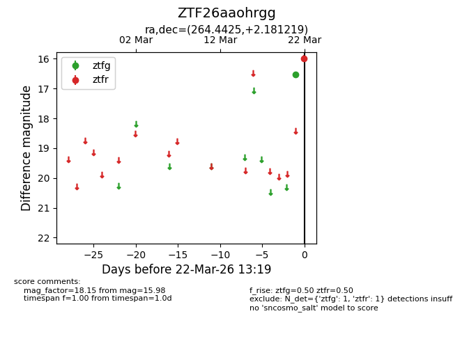
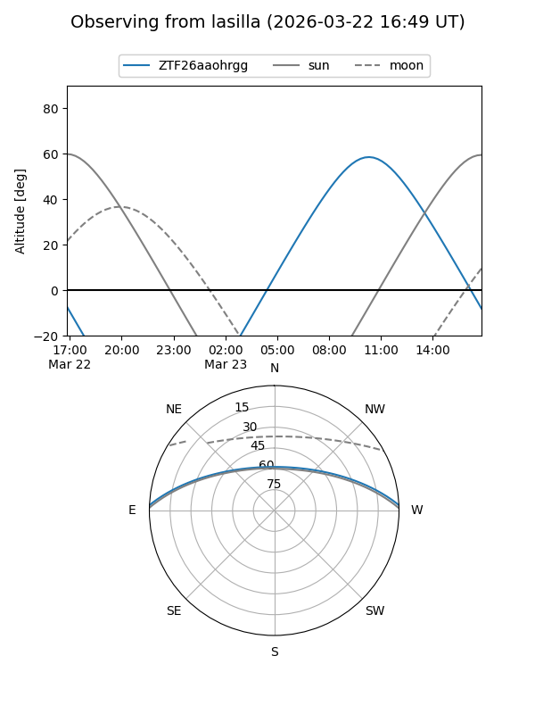
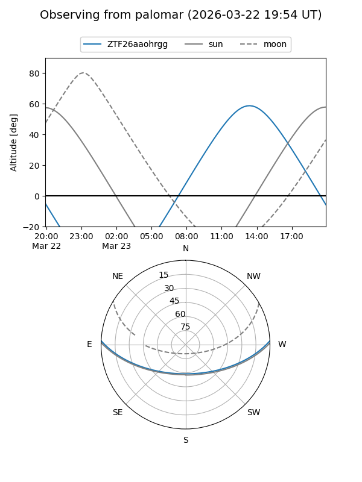

ZTF26aaohrgg
Target ZTF26aaohrgg at 2026-03-22 13:21
Aliases and brokers:
FINK: link
Lasair: link
ALeRCE: link
alt names
ZTF26aaohrgg (ztf,fink_ztf)
Coordinates:
equatorial (ra, dec) = 264.4425,+2.18122
equatorial (HMS+DMS) = 17:37:46.20,+02:10:52.39
galactic (l, b) = (26.3091,+17.35705)
Flags:
Photometry:
last ztfg=16.53, ztfr=15.98
1 ztfg, 1 ztfr detections
Lightcurve

Visibility


Additional plots